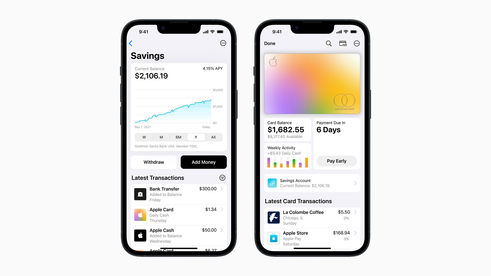
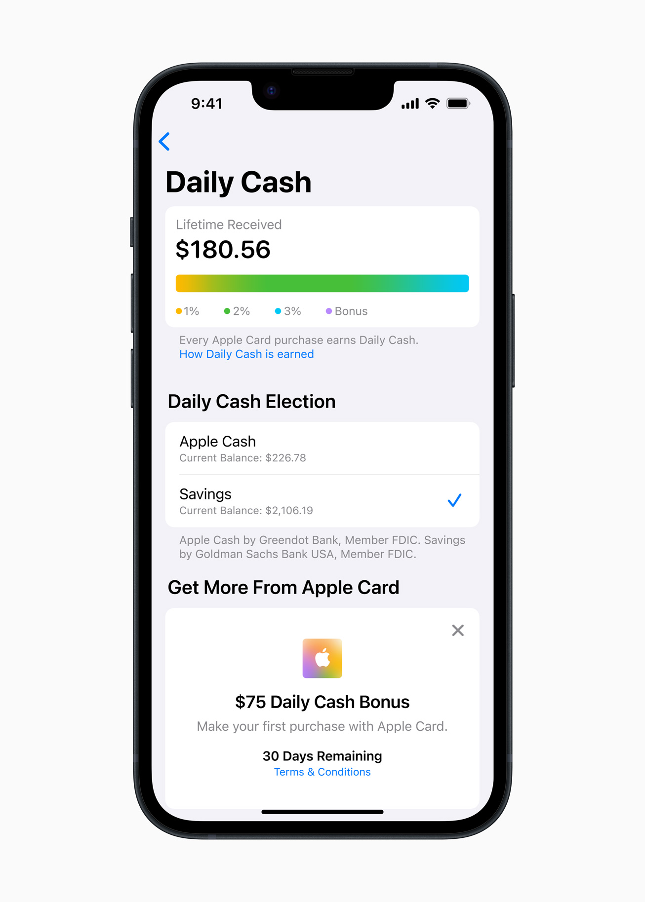
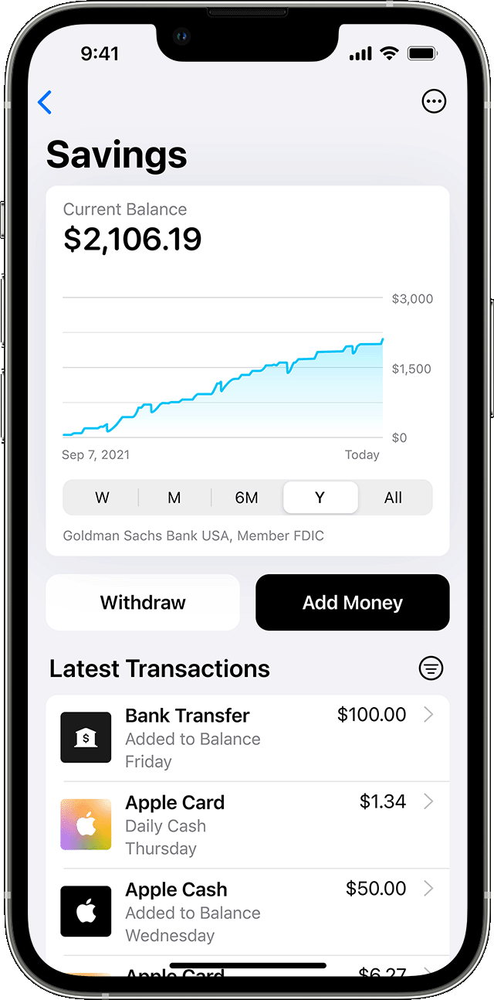

News: Apple launched their savings account via Apple Card
by Aki SyedApple Card Savings
On April 18, 2023, Apple announced that Apple Card has released a Savings Account feature. Starting yesterday, the savings account will start with an initial APY of 4.15%, which is 10x the national average of US banks. This account will have no fees, minimum deposits and no minimum balance requirements. The feature will allow users to open a high-yield savings account from Goldman Sachs in their wallet app on their iPhone and start earning interest on their daily cash balance. They can also earn interest by adding personal funds deposited into the savings account via apple cash, or via a linked bank account.
Steps to take to open up a savings account in the wallet app.
In order to open up the savings account, you must first be signed up for the apple credit card.
Once signed up, use the steps below to open the savings account:
- open the wallet app from your iPhone.
- click on Apple Card.
- tap the 3 dots on the top right corner.
- select Daily Cash.
- select Set Up Savings.
Once set up, the daily cash automatically gets deposited into the savings and start earning interest.
If the user would like, they can choose to have the daily cash added to their apple cash instead.
